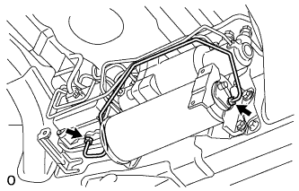

HEIGHT CONTROL ACCUMULATOR > REMOVAL |
| 1. REMOVE TAILPIPE ASSEMBLY |
for 2UZ-FE:
Remove the tailpipe (Click here).
for 1VD-FTV:
Remove the tailpipe (Click here).
| 2. REMOVE CENTER EXHAUST PIPE ASSEMBLY |
for 2UZ-FE:
Remove the center exhaust pipe (Click here).
for 1VD-FTV:
Remove the center exhaust pipe (Click here).
| 3. REMOVE HEIGHT CONTROL UNIT INSULATOR |
 |
Remove the 3 bolts and insulator from the control unit.
| 4. DISCHARGE SUSPENSION FLUID PRESSURE |
 |
Connect a hose to the bleeder plug for the height control accumulator and loosen the bleeder plug.
Discharge the suspension fluid pressure.
After the fluid pressure has dropped and oil has drained out, tighten the bleeder plug and remove the hose.
| 5. REMOVE NO. 7 HEIGHT CONTROL TUBE |
 |
Using a union nut wrench, remove the control tube from the control valve and pump accumulator.
| 6. REMOVE SUSPENSION CONTROL PUMP ACCUMULATOR ASSEMBLY |
 |
Remove the 3 nuts and pump accumulator.